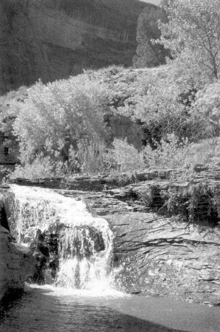
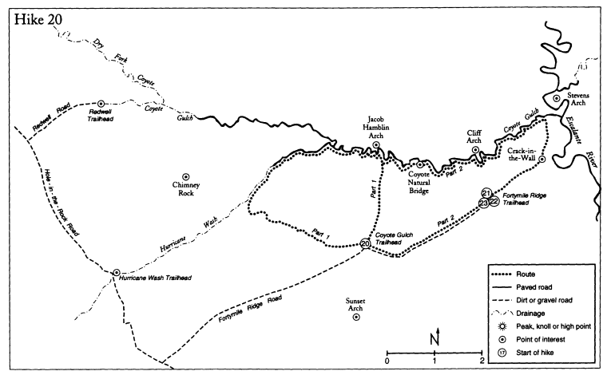
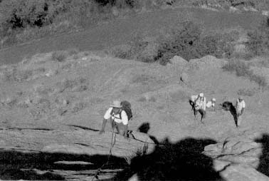
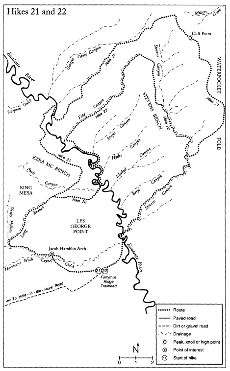
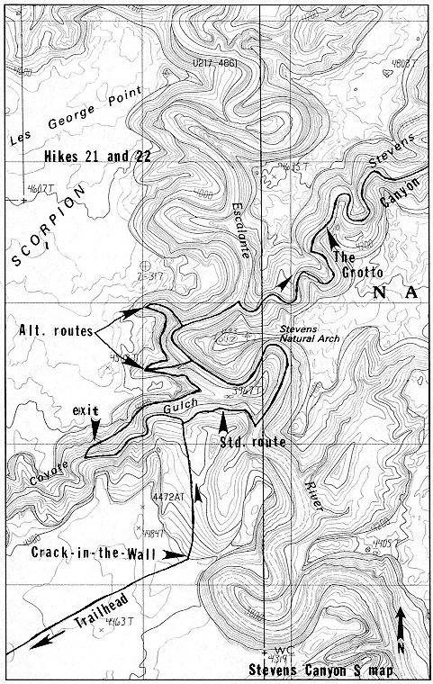
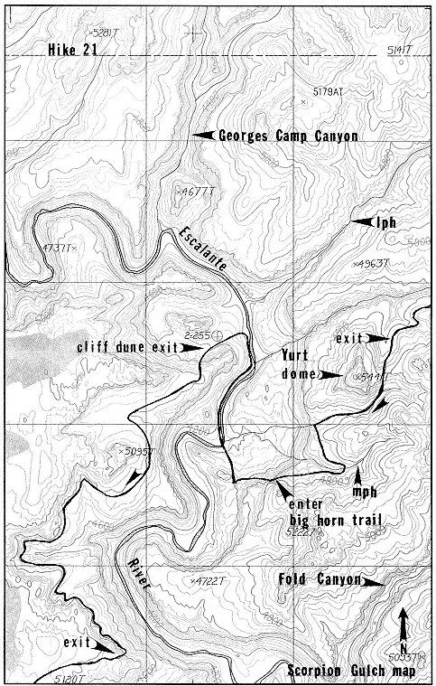
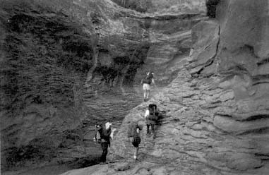

Stevens Canyon & Baker Route
20. Coyote Gulch
Season
Any.
Time
Part 1—5.0 to 7.0 hours. Although the hike can be done in one day, there is so much to explore that it is best done as a two-day hike.
Part 2—9.5 to 12.0 hours. This is best done as a two-or three-day hike.
Water
Water availability is not a problem on this hike. Lower Hurricane Wash has large springs and Coyote Gulch has a perennial flow of water.
Elevation range
Part 1—4060' to 4805'. Part 2—3720' to 4805'.
Maps
Part 1—King Mesa. Part 2—Add Stevens Canyon South.
Skill level
Part 1—Moderate route finding. Class 5.0 climbing with exposure. The leader must be experienced with belay techniques and be capable of leading the climbing section without protection. Lots of shallow wading. This is a moderate route. If done as an overnight hike, low-impact camping skills are necessary.
Part 2—Moderate route finding. Class 3 + scrambling. Lots of shallow wading. This is a moderate route. Familiarity with low-impact camping techniques is essential.
Special equipment
Part 1—Wading boots. A long, steep climb out of the canyon near Jacob Hamblin Arch dictates the use of a 165-foot climbing rope.
Part 2—Wading boots. No ropes are needed.
Note
Coyote Gulch is the most popular canyon in the Escalante region. Spring brings an overwhelming number of people into the canyon.
Land status
This hike is in Grand Staircase-Escalante National Monument and Glen Canyon National Recreation Area.

Fall, with its cooler weather and the beauty of the leaves changing color, is the preferred season.
Remember, group size is limited to twelve. Dogs must be leashed. No fires are allowed. These rules are strictly enforced in Coyote Gulch.
Multiple and braided trails are a major problem in Coyote Gulch. Stay on the main trail. There are plenty of campsites; do not
make your own. Be exceptionally careful with garbage. Carry out more than you brought in. You must carry out your toilet paper and leftover food when in Coyote Gulch!
Like James Joyce's difficult novel Ulysses, Coyote Gulch with its many superlative side canyons and slot-like tributaries, several arches, a massive natural bridge, waterfalls, and towering walls draped with variegated varnish takes many visits over a period of years to fully understand and appreciate. Once used by Anasazi and Fremont Indians during the growing season, Coyote Gulch has become the canyon to which all others in southern Utah are compared.
One problem with exploring Coyote Gulch in the past has been that the standard routes into it-Red Well, Dry Fork Coyote, Hurricane Wash, and Fortymile Ridge-force the explorer to hike the length of the canyon twice, which essentially doubles the human load in the canyon. This loop hike eliminates that problem.
Note: Some may want to explore lower Coyote Gulch-from Jacob Hamblin Arch to the Escalante River-without hiking through the upper canyon. I recommend you do this in reverse order by going down Crack-in-the-Wall, hiking up Coyote Gulch, and exiting at Jacob Hamblin Arch. This keeps you from down-climbing the steep slab at the arch, which is very dangerous.
The route comes in two parts. Part 1 starts on the crest of Fortymile Ridge, enters Hurricane Wash just as it starts to narrow, and follows it down to Coyote Gulch. A climb out of Coyote Gulch near Jacob Hamblin Arch, which is halfway down the canyon, takes one back to the trailhead.
Part 2 continues downcanyon from Jacob Hamblin Arch to the Escalante River and returns to the trailhead via Crack-in-the-Wall.
Part 1: To Hurricane Wash
(King Mesa map and Map Twenty-three.) Before you start the hike look north-northeast and spot two squat domes. (The dome on the left is at elevation 4843.) For those doing Part 1, you will hike between these domes at the end of the hike.
From the trailhead you can see Chimney Rock, a lone pinnacle on a flat plain in the distance to the west-northwest. Hike across a blackbrush-covered plain and over a low rise toward Chimney Rock. Descend slickrock into a very wide bowl and follow any one of the small washes downhill. The washes, turning sharply and often, slowly funnel together. Pass a small arch perched atop a tower. The

gradient steepens and the wash enters a slot. This is the main drainage that flows into Hurricane Wash. (The drainage is shown to the north of elevation 4556.) Short sections of slot are interspersed with sandy washes. Rather than climbing through the slot, stay along its right (LDC) rim, skirting towers and scrambling over slickrock hills as necessary.
The slot turns into a deep gorge and intersects a wide sandy wash. A steep route down the slickrock at the confluence leads to the floor of the wash, as also do several easier slopes to the right. Follow the route downcanyon for a couple of minutes to Hurricane Wash. (1.5-2.0 hours.)
Down Hurricane Wash
You have intersected Hurricane Wash just as it gets interesting. The Navajo walls slowly build and narrow. Water starts flowing a half hour downcanyon and cottonwood-shaded benches make good campsites. Coyote Gulch, with its larger flow of water, comes up in a rush. There is good camping in the vicinity. (1.0-1.5 hours.)
Down Coyote Gulch
As you head down Coyote Gulch look for several rows of Moqui steps that lead out of the canyon on both sides. They are challenging to locate. The walking is serene along a trail that constantly crosses the creek. Arcadian stands of cottonwoods and enormous alcoves line the way. The canyon quickly constricts as it enters a stretch of ''goosenecks,' or tight meanders. Jacob Hamblin Arch has been cleaved by wind and water from a long fin of sandstone. Popular campsites proliferate in this area and a pit toilet is located a couple of hundred yards upcanyon from the arch on the left (LDC). (1.0-1.5 hours.)
Historical note: Jacob Hamblin Arch was originally named Lobo Arch by early ranchers out of respect for an old desert wolf that used to roam the area. The name Jacob Hamblin Arch was first suggested to local guide Burnett Hendricks by a man measuring silt on the Escalante River. Hendricks later mentioned the name to persons on a National Geographic expedition down Coyote Gulch in 1955. Robert Moore, a member of that expedition, described Jacob Hamblin Arch: "It looked to us as if a giant had thrust a fist through the rock wall to provide a peephole through which he might view the canyon beyond."
Jacob Hamblin, often called the "Mormon Leatherstocking," was sent to southern Utah in the 1850s by the head of the Mormon church, Brigham Young. Hamblin was the first Mormon missionary to visit the area and to befriend the local Indians. He was also a scout and an explorer who proved invaluable to John Wesley Powell during the latter's Colorado River adventures.

Exit Coyote Gulch
Hike past Jacob Hamblin Arch. Just as the arch disappears from view, ascend a steep trail to the right (LDC) to a sandy platform forty feet above the creek. Climb horizontally across a slickrock slab toward the arch (W) for fifty feet, then climb a steep slab (Class 5.0, 120' belay), using Moqui steps in places, to the top of the cliff.
Warning: One evening my brother Ace, a couple of friends, and I sat on the rim of Coyote Gulch directly across from the Jacob Hamblin Arch exit slab. The spectacle we witnessed from our high perch still chills me. A group of adults and children were climbing the steepest part of the route—without a rope. We watched in horror as they slowly made their way upward by using shoulder stands, pulling small children up the cliff by their arms, and scratching for purchase on the polished rock.
I remembered an incident many years ago when I had set my pack on a ledge while helping my group (on belay) up this same slab. One of the group grabbed my pack to use as a handhold (whoops). The pack was pulled off the ledge and I watched as it plummeted 150 feet to the floor of the canyon, bursting along the way.
Now I envisioned a small body taking the same plunge, surely shattering as it bounced down the cliff. This exit route, though used by many, is extremely dangerous. All due caution must be exercised. Belays MUST be used.
Hike due south up the slickrock and pass through the two squat domes mentioned at the start of the hike. The trailhead is visible from the saddle. (1.5-2.0 hours.)
Part 2: Continuing on down Coyote Gulch
(King Mesa map.) From Jacob Hamblin Arch continue downcanyon. The character of the canyon changes. The narrow canyon widens and the way is lined with a lush and varied plant community. An hour down, Coyote Natural Bridge spans the canyon. Its sixty-eight-foot opening allows effortless passage and is a highlight of the trip. (1.0 hour.)
Historical note: After walking through Coyote Natural Bridge, canyon explorer and environmental writer Edward Abbey wrote: "I walked under the bridge, feeling the sensuous pleasure of moving through a wall of stone, wading the stream that made the opening, standing in shadow and looking back at the upstream canyon bathed in morning light, the sparkling water, the varnished slickrock walls, the fresh cool green of the cottonwoods, the pink and violet plumes of tamarisk."
The ensuing stretch of canyon contains several short side canyons that are worth a visit. The next major attraction is Cliff Arch, located high on a wall to the left. Early visitors called it Jug Handle Arch. (1.0 hour.)
Downcanyon the character of Coyote Gulch again changes. The creek has cut through Navajo Sandstone and into the Kayenta Formation. This formation, consisting of alternating layers of sandstones, siltstones, and mudstones, erodes into ledges that waterfalls now plummet over.
The canyon becomes harder to negotiate. Water, just an idle relic above Cliff Arch, becomes the focal point below. Springs gush from the walls and hanging gardens with maidenhair ferns, monkeyflowers, grasses, and columbines dangle from the cliffs. During the colder months icefalls drop from high alcoves to the floor of the canyon. Route finding around a panoply of waterfalls is a minor problem.
Near the Crack-in-the-Wall exit Stevens Arch becomes visible in the distance. (Stevens Canyon South map.) The lower section of a large sand dune is visible to the right (S). This marks the exit. (If you go too far downcanyon, you will intersect a log ladder, then the Escalante River. Backtrack for ten minutes.) (1.5-2.0 hours.)
Historical note: Stevens Arch, the fifth-largest arch in canyon country, was named for Al Stevens, a rancher who used to run cattle in the area. Early cattlemen called it Stephen's Canyon Arch and river runner Harry Aleson noted it in his river logs as Sky Arch. Aleson wrote that it was "one spectacular bridge, with opening about 150 by 200 feet-the bridge hanging about 700 feet up in the canyon wall-blue sky filling the hondo-shaped opening. You will choke up with a feeling of beauty and awe when you first glimpse
it . . . " Stories are told of daredevil pilots illegally flying through the arch.
The exit
Hike south up the steep cliff dune on an established trail to Crack-in-the-Wall. Squeeze through the crack (Class 3 +) and walk to the top of the cliff. Look southwest. In the distance a vague sandy track runs up a hillside. Cross a large area of low slickrock hills to the track. (King Mesa map.) Hike up it to the Fortymile Ridge trailhead. (1.5-2.0 hours.)
It is now a 2.6-mile walk along the road back to the start of the hike. (1.0 hour.)
21. Stevens Canyon and the Waterpocket Fold
Season
Spring until mid-May or fall after mid-September. Due to a lack of water along several sections of this hike, do not attempt it during periods of hot weather or an extended drought.
Time
39.5 to 58.5 hours. Seven days minimum. Layover days and digressions can add more days to the length of the trip.
Water
Water can be a major problem on this trip. Recent rains will ensure that potholes are full. Read the text about water sources and carefully assess current conditions before embarking on the trip.
Elevation range
3700' to 6745'.
Maps
King Mesa, Stevens Canyon South, Stevens Canyon North, and Scorpion Gulch.
Skill level
Very difficult route finding. Class 5.2 rock climbing. The leader must be experienced with belay techniques and be capable of leading the climbing sections without protection. Some wading. This route is suitable only for exceptionally experienced canyoneers who are in excellent physical condition. Low-impact camping skills are essential.
Special equipment
Wading shoes or boots. An eighty-foot rope is essential. Each person should have the capacity to carry at least two gallons of water.
Note
There is one thick patch of poison ivy in Stevens Canyon near the Grotto that is impossible to avoid.
Land status
This hike is in Glen Canyon National Recreation Area.
Edward Abbey, after a hike into Stevens Canyon, wrote, "I walked a mile or so up Stevens Canyon—rare, secret, lovely place it seemed." With its huge alcoves and overhangs, vast expanses of slickrock, and a delightful stream choked with luminous green moss, it is indeed a special canyon. Starting at the crest of the Waterpocket Fold, Stevens Canyon drains a vast area on its twenty-mile march to the Escalante River. The length of the canyon, difficult route finding, and a lack of water in its upper reaches have kept the hordes at bay. Early ranchers and later uranium prospectors found routes into the canyon from the Waterpocket Fold, but little sign of their presence remains.
Two hikes into Stevens Canyon country are presented. Both are long, difficult, and fraught with danger. Water sources are difficult to find, and tricky climbing in a remote setting adds spice to these classic routes.
The first route starts at the Fortymile Ridge trailhead, drops into Coyote Gulch, and goes up Stevens Canyon. It then exits the right side of the canyon and goes to the top of the Waterpocket Fold. A complicated route leads back to the Escalante River, across Fools Canyon, and into Coyote Gulch. It is followed back to the trailhead. An expanded version of this hike, including an exit out the top of Stevens Canyon, was detailed in Canyoneering 2: Technical Loop Hikes in Southern Utah.
The second route into Stevens Canyon country is presented in Hike #22.
Down Crack-in-the-Wall
(King Mesa map and Map Twenty-four.) From the trailhead, follow a sandy track northeast down a hill and across a plain. When the track ends, follow a line of cairns northeast to the edge of an escarpment overlooking the Escalante River. (Stevens Canyon South map and Map Twenty-five.) The cairns are regularly knocked over. If the route is not apparent, simply continue northeast across Navajo slickrock to the edge of the escarpment.
Historical note: The vague track you have been following was built by county officials in 1966 as part of a feasibility study for a proposed Trans-Escalante Federal Parkway road which would have tied Bullfrog Basin on Lake Powell to the town of Big Water in Arizona. For details on this road see the "Wilderness" chapter.
Locate a long fin of Navajo with a U-shaped gap extending northeast toward the river (shown one-half mile east of elevation 4484T). The Crack-in-the-Wall, a break in the Navajo, is 100 yards to the left (W) of the fin. After the first short drop it is most simple to lower packs down a twenty-five-foot wall rather than trying to squeeze them through the crack. Follow an established trail down a



cliff dune to the left (W) side of a tower. Multiple trails are a problem in this area. Stay on the trail! Stevens Arch can be seen to the northeast.
As you near Coyote Gulch, locate a trail that is thirty feet above the bottom of the canyon. (Do not hike down the streambed.) Follow the trail downcanyon, cross a steep slickrock slab (Class 3 +), and descend an eight-foot wall to the canyon floor. (1.5-2.5 hours.)
To Stevens Canyon
Wade down Coyote Gulch for ten minutes to its confluence with the Escalante River. Continue wading up the sand-bottomed Escalante River and under Stevens Arch to Stevens Canyon, the first canyon to the right (E). (1.0-1.5 hours.)
Alternate route: This route must be used if the water level in Lake Powell is high. From the bottom of the sand dune trail, hike up Coyote Gulch for about fifteen minutes to the first area of campsites on the right (LUC)(N). They are ten feet above the canyon floor and are shaded by huge cottonwoods. A large spring flows from a wall 100 yards farther upstream on the right.
From the downcanyon end of the campsite locate an established and cairned trail zigzagging up Kayenta ledges to the north. The trail turns northeast and traverses a talus slope to a saddle on a peninsula across from Stevens Arch (at elevation 3967T). The trail turns northwest. Follow it for ten minutes to the first side canyon dropping to the Escalante River (SE) (shown one-eighth mile east of elevation 4542T). You intersect the canyon before passing the fin containing Stevens Arch. Follow a cairned route down the canyon to the river.
Should the lake be particularly full, continue traversing upcanyon to the next side canyon. This canyon is hard to descend (Class 4) and has an almost impenetrable barrier of vegetation at its mouth. Wade up the Escalante River to Stevens Canyon. (Add 1.0 hour.)
Up lower Stevens Canyon
Do not remove your wading shoes yet. The first mile of Stevens Canyon has a half-dozen or more crossings and is a bit of a thrash. Pass the first deep pool on the left (LUC) by climbing a stack of rocks and a row of Moqui-style steps (Class 5.0, 20', belay and hand up or haul packs). Go by the second pool on the right. Hikers have built a pyramid of rocks to ease the difficulty (Class 4+, 12'). The wading comes to an end after another quarter mile. (1.0-1.5 hours.)
In fifteen minutes a trail goes up a slippery, poison-ivy-choked rockslide. Before negotiating the hill, visit the Grotto, fifty yards to the left (LUC)(W). It is an exquisite alcove with a pool at its base topped by Hanging Arch, a unique natural bridge. Above the rockslide, the canyon is intermittently dry.
The route continues up Stevens Canyon. It passes a nice side canyon (shown to the north of elevation 4819T) coming in from the right (E). There are occasional poison ivy patches, willow and tamarisk thickets, and other small obstacles to overcome. The bushwhacking ends in an area of wonderfully fluted slickrock and varnished Wingate walls.
At the end of the slickrock the canyon is blocked by a pour-off

(north-northwest of elevation 4883T). Note the Moqui steps on the right-hand wall. They lead into a short dead-end slot (Class 5.8, 25'). Happily, there is no more poison ivy for the remainder of the trip. There are large potholes and good campsites in the area. (2.5-3.5 hours.)
Up middle Stevens Canyon
To continue up Stevens Canyon, backtrack from the pour-off for several hundred yards to the first rubble heap leading up the Wingate wall to the left (LDC)(E). Scramble up it, follow a wide ledge downcanyon for fifty yards, and ascend a steep slickrock ramp northeast to the top of the Wingate (Class 3 + ). Hike upcanyon (NE) on the top of the Wingate and along Kayenta ledges. Stay near the rim of the canyon. At the first corner note the rockslide coming down from the Navajo wall to the right. This huge section of rock fell in the summer of 1991.
Continue hiking on top of the Wingate for almost two hours.
Digression: The first steep slope dropping through the Wingate to the canyon bottom provides access to many medium potholes and short slots. There is excellent slickrock camping in the area. Do not continue up the floor of the canyon, since there is no easy exit out its top.
The trail descends the second steep slope back into the bottom of the canyon above a fall just as the Wingate wall to the right nearly disappears. Note the small natural bridge and large pothole at the top of the fall. (2.5-3.5 hours.)
In thirty minutes the canyon divides three ways (south-southwest of elevation 5087T). Watch carefully for this junction. It is somewhat hard to see. Turn left (W), staying in the main canyon. The canyon bottom is intermittently sand and slickrock floored. It has a seasonal flow of water and a string of inviting pools. In fifty minutes the canyon narrows for 100 yards. There are two large elongated potholes surrounded by slickrock--a perfect place for a break and a dip if the water is flowing. (Map Twenty-six.) It is important to recognize this area because the exit out of the canyon is a short way up and is hard to locate.
About nine minutes upcanyon from the elongated potholes the canyon turns right, from northwest to northeast. The Wingate wall to the right (E) is short and broken. At the far side of the corner a short section of constructed cattle trail is barely visible twenty-five feet above the ground. This is the Baker Trail and the exit route. (If you go too far upcanyon you will see a long straight stretch lined with grasses, willows, and cottonwoods that is marked as a spring one-quarter mile south-southwest of elevation 5170T on the map.) The spring has a large flow of water and there is camping in the area. (1.5-2.5 hours.)
Warning: The next part of the hike, along the Baker Trail to the top of the Waterpocket Fold, takes a long day that includes a lot of elevation gain, route-finding problems, and no water. Make sure you


are prepared. A jump start the night before or a crack-of-dawn start is essential.
Exit Stevens Canyon
Exit the canyon via the Baker Trail to the northeast. The constructed part is very short and ends on Wingate slickrock. Follow the top of the Wingate northeast, staying near the rim of the canyon. Below you is the spring area with its numerous huge cottonwoods.
Historical note: The Baker Trail was named for Eugene Baker, who moved his family from Escalante to a ranch at the mouth of Halls Creek in 1919. Baker and his sons built the trail to the top of the Waterpocket Fold and into Stevens Canyon to provide access for their cattle. The eastern section of the Baker Trail—from the crest of the Waterpocket Fold to Halls Creek—is often considered a part of the Black Trail. See Hike #23 for more details on the Baker and Black trails.
Within ten minutes intersect and follow the Wingate rim of a side canyon coming in from the east (shown to the east of elevation 5170T). Follow along the serpentine course of the side canyon on top of undulating waves of slickrock for a half hour until the Wingate tapers down and a trail drops to the bottom of the canyon. Hike up the canyon. There are medium potholes in the canyon and, if the potholes are full, this area could be used for camping.
(Stevens Canyon North map.) Minutes after you enter the canyon a very small side canyon comes in on the left (NW) at the end of the Wingate. One minute past the small side canyon there is
another small canyon to the left (N) with two cottonwoods and a pinyon pine near its mouth (shown one-eighth mile south-southeast of elevation 5419AT.) A large cairn is immediately downcanyon in front of a large juniper tree. You will exit the canyon here. (If you go too far, the canyon ends in a fall.)
Exit the side canyon
Surmount a seven-foot wall (Class 4) behind the aforementioned pinyon pine and continue up the side canyon for a minute or so until it is possible to exit it by scrambling up steep ledges to the left (W) to the top of the Kayenta. There is a piece of the old cattle trail near the top. Follow the rim of the side canyon north, head it, and return to the rim of the main canyon. Continue upcanyon. In several more minutes, after passing a series of Navajo domes that are to the left (LUC), drop into the shallow upper part of the main canyon. Do not head it; instead, go northeast up the sand-floored canyon.
The canyon divides almost immediately. Stay to the right (NNE) (immediately north of the ''5" in elevation 5463AT). In about twelve minutes the canyon divides again, just before a split pinnacle. Stay to the right (E). Several minutes later the canyon divides again. Stay to the right (NE) for several paces; then follow a trail up a hill to the right (E).
At the top of the hill you will find yourself in a shallow drainage for 100 yards. The trail exits the drainage to the left (N) up a hillside and quickly enters another shallow drainage going east-northeast. The drainage goes generally northeast to the crest of the Waterpocket Fold. This section is confusing. If you miss the trail, do not panic! Simply wend your way northeast up draws and around domes until you are on the crest of the Waterpocket Fold. (You should end up on the top of the Waterpocket Fold between elevations 5642T and 5658T.) (3.0-4.5 hours.)
Historical note: As you walk along you will notice depressed areas containing innumerable flakes of chert, jasper, and chalcedony. These are called lithic scatters and are evidence of the Anasazi Indians who roamed the Waterpocket Fold during the late Basketmaker II period (approximately A.D. 500). The scatters consist of the chips left over when the Indians flaked larger pieces of rock into cutting tools, spear points, and scrapers. The base rock used for chipping was not available on the top of the Waterpocket Fold; it was carried from outcrops found in the Halls Creek area. Please leave the chips in place and do not collect them.
Digression: To locate the section of the Baker Trail that goes east down the cliffs to lower Halls Creek, first locate the small hill
shown at elevation 5658T. Pick up the trail a quarter mile northeast of the hill. It can be hard to follow in places, though cairns do help. The trail ends a quarter mile northeast of elevation 4032T on the Hall Mesa map. (2.0-3.0 hours.)
To Cliff
Follow the crest of the Waterpocket Fold generally north. This route looks straightforward, but there are several false summits and a couple of shallow canyons to cross. After recent rains there may be pothole water in scattered locations along the Navajo. "Cliff" (labeled on the map as Cliff at elevation 6745) is the highest point on this section of the Waterpocket Fold. There are several labeled bench marks on its Navajo summit. (5.0-7.0 hours.)
Water: From Cliff look southwest into the bowl of upper Stevens Canyon. Note a large freestanding tower with a smaller tower on its right side down in the bowl (elevation 6361T). Walk directly toward the right side of the larger tower (SW). You are searching for a large shallow pothole with cattails in it that is 150 yards inland from the rim. A huge cattail-choked pothole can be found 200 yards to the east-southeast of the shallow pothole by going over a rise and dropping into a deep depression. (Both water sources are a quarter mile west-northwest of the spring shown on the map.) It may take some scouting to find the potholes. Remember that bighorn sheep and deer depend on these potholes. Camp at least 300 feet from them and do not visit them at night.
Finding the descent canyon
The descent canyon is hard to locate. Follow the directions and your map carefully. From Cliff look north into the square-topped head of Millers Creek Canyon. (Map Twenty-seven.) Make your way north along the top of the Fold until you are even with the northwest end of Millers Creek Canyon. Go northwest, following the crest of the Waterpocket Fold for another twenty minutes. You will pass the head of a white, shallow, Navajo slickrock-lined canyon. This is the descent canyon. (The canyon starts at elevation 6601AT and goes south-southwest. (1.5-2.5 hours.)
Essential Digression: To make sure you descend the correct canyon, continue past the top of the canyon for about ten minutes until you can see the red Wingate walls of East Moody Canyon to the west-northwest. There are no other red-walled canyons in the vicinity. Backtrack to the descent canyon. Do not try to find the descent canyon without first locating East Moody Canyon. There are a couple of similar looking Navajo-lined canyons that feed into the descent canyon, but they contain impassable falls. (0.5 hours round-trip.)

The descent canyon
Go southwest down the shallow sand-floored canyon for twenty-five minutes to a fall. Pass it on the right (LDC). There are a couple of small, easily negotiated falls before you reach a string of large potholes that are 200 yards above an impassable fall. There is camping in the area. (1.0-1.5 hours.)
To pass the fall, backtrack for a couple of hundred yards to the top pothole and ascend a slope to the left (LUC)(W) to the foot of a Navajo ridge (elevation 6345T). Follow the base of the ridge upcanyon until you are between the second and third domes. The first two domes have rounded tops; the third is more pointed. Scramble up between the domes and negotiate a short wall behind a juniper (Class 4) to a saddle.
From the saddle, look south at a ridge that drops into a shallow canyon to the north. Make your way to the ridge, using the branches of a pinyon pine to help ascend a short slab (Class 4). Descend very steep slickrock into the canyon (Class 4). A short distance downcanyon is another drop. Pass it via a less-than-vertical crack on the right (Class 4+, 50', belay and lower packs). The Navajo walls and domes below are sublime.
At the next impassable fall there is a large reed-filled pothole. Exit the canyon up a short hillside to the right (NW) to a long thin saddle with fantastic views and excellent camping. The deep, impressive canyon to the north is Georges Camp Canyon (LKA). (1.5-3.0 hours.)
Historical note: Georges Camp Canyon was named for rancher George Davis, who had a line camp behind an abandoned meander at the mouth of the canyon. Davis, an immigrant from Wales, moved to the Escalante area at the turn of the century and homesteaded north of town in lower Pine Creek. A man of many interests, Davis built a dance hall in town in 1901, belonged to the local band and dramatic troupe, had an interest in the People's Exchange dry goods store, was a director of the Pine Creek Irrigation Company, and delivered mail to some towns north of Escalante.
Canyon-hopping to the Escalante
The route gets complicated. Pay close attention to the text and to your maps. Proceed to the north end of the saddle until you come against a Navajo dome. Descend a chute to the west. Traverse southwest, following a bighorn sheep trail along Kayenta ledges. (Do not drop to the top of the Wingate.) (Map Twenty-eight.) Scramble up to the first notch in the Navajo ridge to the left (S). The notch has a dome in its middle. (The notch is one-half mile east-northeast of elevation 5816T.) (1.0-1.5 hours.)
From the notch, look south across the canyon to another notch

in the Navajo. Cross the canyon and hike into that notch. (The notch is one-eighth mile northeast of elevation 5673T.)
From the notch, look south into the next canyon. You will see two canyons coming together in a "Y," with a twenty-foot pinnacle at their junction (one-eighth mile east-southeast of elevation 5673T). Descend a steep Kayenta wall to the south. The route is tricky; it has loose rock and may take some scouting (Class 4, lower packs). Descend the canyon on its left (LDC) side until you are below the pinnacle at the "Y." Cross the short canyon that forms the left arm of the "Y." There are large potholes in both canyons. Hike southeast to the top of the Wingate. There is excellent slickrock camping in the area. (1.0-1.5 hours.)
Follow the top of the Wingate along the south edge of the canyon for an hour. (Scorpion Gulch map.) Locate a large, dominant, freestanding tower (elevation 5405T) on the opposite (W) side of the canyon. Several minutes past the tower you will be forced to the head of a short side canyon. From its top, look up to the east. The Navajo cliffs that have been to your left (S) end in a final tower that has two windows. Exit the canyon here by hiking to the top of the Kayenta ridge to the southeast (one-quarter mile east-northeast of elevation 5164T).
Descend Kayenta ledges south to the rim of another canyon (shown one-quarter mile south of elevation 5164T). Hike upcanyon along the rim of the canyon until you find a place to cross. The canyon does contain large potholes and there is good camping in the area. (1.0-1.5 hours.)
(Map Twenty-nine.) After crossing the canyon, follow its south rim west-southwest for a half hour to a notch to the south between the Navajo wall and a prominent dome, which is locally known as Yurt Dome (elevation 5441T, the one nearest the Escalante). Hike through the notch and descend Kayenta ledges south into a Wingate-lined drainage. Follow it west until you are on the rim of Escalante Canyon. Go southeast over a short ridge to the rim of a small canyon, head it, and return to the rim of Escalante Canyon.
Descend to the Escalante River
The route finding becomes even more tricky. Looking southwest, you will see a broken promontory of rock and a long talus slope extending northeast to southwest toward the Escalante River. (The promontory is shown one-quarter mile east of elevation 5095T and immediately south of a marked 4200-foot contour line.) Traverse southwest along the face of the escarpment, going up Kayenta ledges only as needed in order to make further progress. Look for a bighorn trail. After going about seventy-five feet above the Wingate,

you will be forced onto a three-to five-foot-wide ledge. The ledge cuts horizontally across the face of the cliff for 200 yards and ends at the top of a slope leading out to the promontory. It is best to scout the route without a pack. Search carefully, as the ledge looks like it peters out in several places. (If you go too high, you will find yourself on a wide ledge below a Navajo cliff and you will walk above the desired ledge system.)
Warning: The ledge is not technically difficult (Class 3 +), but it is very scary. Belays can be utilized. In one place packs should be lowered to assure that hikers are not accidentally launched off the ledge.
Once on the promontory, descend a steep slope to the north and go down a shallow drainage to the Escalante River. There is good camping on a broad sandy beach across the river. The beach is in the Chinle Formation. (2.0-4.0 hours.)
Exit the Escalante
Hike north up the west side of the Escalante River (no wading) for twenty minutes to the base of a cliff dune that drops east through the Kayenta, Wingate, and Chinle formations. This is the only sand dune in the vicinity. (The cliff dune is south of an abandoned meander shown as 2-255.) Ascend the dune to the west. Near the top, find a cattle trail (LKA the Scorpion Horse Trail) going up the Kayenta to the south. Note the brush fence at the top. (1.0-1.5 hours.)
The Scorpion Horse Trail turns northwest at the brush fence. You will leave the trail here. Go generally south on a wide Kayenta bench, cross a couple of small canyons, and head others. After forty-five minutes the trail goes under the back of a larger canyon that has two distinct alcoves. Past this the trail crosses a wide plain in front of another side canyon. The Kayenta ledge narrows considerably and you will see a Navajo dome toward the end of a ridge on the right (LDC). This is the first break in the Navajo wall and it is the exit route. (If you go too far, the trail turns sharply south at a corner and goes toward the back of a long side canyon or bay.) (The ridge is shown one-quarter mile east-northeast of elevation 5120T and just northwest of a marked 4600-foot contour line.)
Climb up the Kayenta (Class 4, haul packs) and locate a pour-off between the Navajo wall and the Navajo dome. Ascend a crack on the right side of the pour-off (Class 5.2, 10' of climbing, 25' of exposure, belay and haul packs). Follow the drainage up for 100 yards until it divides. Go west up the prow between drainages and work southwest until you are between two squat, elongated, Carmel-topped domes. The dome to the left is flat-topped; the dome to the

right is rounded. Without a pack, hike to the top of the dome to the left (E). (1.5-2.0 hours.)
Into Fools Canyon
(King Mesa map.) Walk to the southeast end of the dome and look east-southeast. Before you is the deep, wide side canyon or bay. The tallest, bare-topped, somewhat-pointed dome is marked elevation 5165 on the map. To the right of it, a couple of miles in the background, is a flat, Carmel-topped dome (elevation 5170). (Map Thirty.) This dome is your goal. It is easiest to pass the initial jumble of domes at the head of the long side canyon or bay by passing around its backside and dropping on steep slickrock into the canyon. (It is shown as a small drainage west of elevations 5110 and 5058.) There is a large pothole a quarter mile down this canyon in a section of narrows. Hike up the canyon back to the rim.
Once you are past the domes, stay within 200 to 300 yards of the rim of Escalante Canyon, hiking on pleasant slickrock and across sandy plains until you reach the top of the aforementioned destination dome (elevation 5170). (1.5-2.0 hours)
Historical note: The area you are crossing, Ezra Mc Bench, was named for Ezra McInelly, a local rancher. The James McInelly family moved to Escalante in 1878 and built the first flour mill there. McInelly offspring, twelve in number, were active in the development of the area. Loral J. "Sixty" McInelly is credited with doing the initial bulldozer work on the Hell's Backbone road—a daring feat—in 1933. Arthur McInelly carried mail over the new road to Boulder in the late 1940s, and Arthur and Wells McInelly prospected for uranium in the Circle Cliffs Basin in the early 1950s.
From the top of the dome go south-southeast across a juniper-studded plain and down steepening slickrock to a bowl with a long, prominent, southwest-running rib on its west side. (The bowl is immediately west of elevation 5010.) You will see a long peninsula of red Navajo Sandstone jutting southwest far into Fools Canyon on the south side of the bowl (shown one-third mile west of elevation 4827 and immediately north of a 4400-foot contour line).
Make your way to the top of the rib and descend it, traveling southwest into the bowl. Note the steps hacked into the rock to facilitate getting horses up and down. Walk to the south end of the bowl. A wide side canyon drops into Fools Canyon, and the long peninsula will be on the left (LDC)(E). To the right of center is a rubble heap that goes down the Navajo and into the canyon.
Do not drop to the bottom of the canyon; instead, follow a game trail down the right side of the canyon on a Kayenta bench until the Navajo ridge on the right ends at a prow. From the end of the
prow, descend to the bottom of a canyon to the right (NW) by first hiking upcanyon for 200 yards, then zigzagging down steep ledges to the floor of the canyon (Class 4-). Follow the canyon into Fools Canyon.
Thrash your way up Fools Canyon through thick vegetation for ten minutes until you are above a huge deep pool—the ultimate swim hole if water is flowing. (Immediately above the pool the thrashing ends and the canyon floor becomes slickrock.) There is camping in the area. (1.5-2.0 hours.)
Exit Fools Canyon
Hike upcanyon from the swimming hole for 100 yards to a trail coming in on the left (SW). (The trail starts to the north of a side canyon that is shown to the north of elevation 4783.) This is an old constructed cattle trail and is easy to follow as it makes its way up the Kayenta and Navajo.
The trail disappears near the top. Hike southwest to the rim of the canyon. (1.0 hour.)
To King Mesa
From the rim you will be able to see King Mesa, a long flat-topped Navajo ridge to the west-southwest. On its left (S) side is a rounded slickrock hill (elevation 5026). The mesa itself is split by a pass (shown at elevation 5020) near its south end. Make your way west-southwest over, around, and through a maze of domes and washes to the pass. (1.0-1.5 hours.)
Historical note: Les George Point, the area between King Mesa and Fools Canyon, was named for Leslie George, a rancher, mail carrier, and bishop in the local Mormon church. King Mesa was named for John King, who emigrated from Scotland and arrived in Escalante in 1893.
Down the Long Branch of Sleepy Hollow
Descend along the left (LDC) rim of a slot canyon that starts at the pass and goes south. This slot is called the Long Branch of Sleepy Hollow (LKA).
Note: Large potholes can be found in breaks in the slot and there is great camping along the slickrock. Remember, Coyote Gulch is being adversely impacted by campers. It is best to arrange your itinerary so you do not have to camp in Coyote Gulch.
The slot ends above lower Sleepy Hollow, a wide canyon with towering walls and a profusion of cottonwoods along its floor. Simply continue along the rim for another couple of minutes until you
can descend moderate slickrock southwest into lower Sleepy Hollow. You may find a short piece of constructed cattle trail near the bottom.
Digression: Lower Sleepy Hollow has a perennial flow of water. The upper reaches of the canyon are exceptional. A slot canyon that starts on King Mesa (between elevations 5112 and 5142) and ends at a fall in lower Sleepy Hollow has been named the Big Tony Fork of Sleepy Hollow. Tony Merten died on his farm in New Mexico in February 1996. His gargantuan size, unlimited physical strength, and unbridled persona perfectly match this slot canyon's character. With his wild red-blond hair and beard, Tony was instantly recognizable to all who encountered him in the canyons or along the windswept desert slickrock he loved so much and worked so hard to preserve. Perhaps all who pass will pay silent homage to Big Tony and to others who have cared about canyon country but can no longer be here to enjoy and be enthralled by it.
Hike down lower Sleepy Hollow to Coyote Gulch. (1.5-2.0 hours.)
Down Coyote Gulch
Now use the route description in Hike #20 for details on going down Coyote Gulch and exiting the canyon at Jacob Hamblin Arch. Once you are on top of the Navajo above the arch, cut east-southeast back to the Fortymile Ridge trailhead. (3.5-4.5 hours.)
22. Stevens and Fold Canyons
Season
Spring until mid-May or fall after mid-September. Due to a lack of water along several sections of this hike, do not attempt it during periods of hot weather or an extended drought.
Time
29.0 to 41.5 hours. Five to seven days.
Water
Water can be a major problem on this trip. Recent rains will ensure that potholes are full. Read the text carefully about water sources and carefully assess current conditions before embarking on the trip.
Elevation range
3700' to 5640'.
Maps
King Mesa, Stevens Canyon South, Stevens Canyon North, and Scorpion Gulch.
Skill level
Very difficult route finding. Class 5.0 rock climbing. The leader must be experienced with belay techniques and be capable of leading the climbing sections without protection. Some wading. This route is suitable only for exceptionally experienced canyoneers who are in excellent physical condition. Knowledge of low-impact camping skills is essential.
Special equipment
Wading shoes or boots. An eighty-foot rope is essential. Have the capacity to carry at least two gallons of water per person.
Note
You will spend a couple of days walking along sloping slickrock with your ankles turned to the side. Many will find this uncomfortable; others may find it debilitating.
Land status
This hike is in Glen Canyon National Recreation Area.
This hike is a shorter and slightly easier variation of the Stevens Canyon and the Waterpocket Fold Hike #21. Instead of exiting the right side of Stevens Canyon and traversing the Waterpocket Fold, this route exits Stevens Canyon on the left. It then enters Fold Canyon, which is followed to the Escalante River. A circuitous route out of Escalante Canyon below Fools Canyon leads to Coyote Gulch and back to the trailhead.
Use the description in Hike #21 to get from the Fortymile Ridge trailhead to the Baker Trail exit in Stevens Canyon. It will take 10.0 to 15.0 hours—or two days—to reach this point. The route description picks up from the start of the Baker Trail.
To Fold Canyon
(Stevens Canyon South map and Map Twenty-four.) From the start of the Baker Trail continue up Stevens Canyon. (Map Twenty-six.) In seven minutes pass a side canyon coming in from the right (NE); huge cottonwoods partially obscure its mouth. Stay in the main canyon to the left (NNW) (west of elevation 5170T). The next section of canyon contains lots of vegetation and many large springs; the going can be tough.
In another thirty minutes a boulder-filled side canyon comes in from the right (NE) (shown to the west of elevation 5546T on the Stevens Canyon North map) . Stay in the main canyon to the left (NW). In another ten minutes a side canyon comes in on the right (N) (shown to the east of elevation 5201T). There is a mining claim written on a boulder at its mouth. Follow the main canyon to the left (W). The vegetation and springs soon end.
In another fifty-five minutes two canyons enter from the right—the first from the northeast, the second from the north. (They are located to the south-southeast of elevation 5277T.) The Chinle Formation is visible at this junction. A mining claim painted on a boulder near the mouth of the canyon states, ''Triple Kay Exp. June No. 1"

From the mouth of the twin canyons continue up Stevens Canyon for fifteen minutes to the first break in the Wingate wall to the left (W). (Map Thirty-one.) (This is one-quarter mile east southeast of elevation 5886T). Ascend broken rock to a wide ledge, follow it upcanyon for fifty yards, then friction up a steep slab for seventy feet to the top of the Wingate (Class 4).
Hike north along the top of the Wingate above Stevens Canyon for forty-five minutes. A pass in the Navajo to the left (LUC)(W) marks the head of Fold Canyon, which is your goal. (The pass is shown one-quarter mile northwest of elevation 5487AT.) You cannot see the pass from the Wingate. Instead, look for a long side canyon that comes into view on the right (E), across Stevens Canyon (shown to the north of elevation 5637T). When you are even with its mouth, start climbing west up the Kayenta (Class 4-). There are several route options. At the top of the Kayenta the pass will be apparent. (1.5-2.0 hours.)
Down Fold Canyon
From the pass, hike along Kayenta ledges on the left (LDC) side of the canyon to a steep slope that drops to the Wingate. Cross the canyon and follow its right rim across sheets of peerless slickrock. The gorge contains large potholes. The Navajo ridge on the right ends at a tower (elevation 5648T). Cross the gorge at the first suitable spot. There is excellent camping in the area. (1.0-1.5 hours.)
Digression: An excellent dayhike starts here and takes you up both the Middle and North forks of Fold Canyon. On the way, you will

cross three passes. Though there is some steep slab climbing, most of the route is along pleasant and spectacular Wingate and Kayenta benches. This route is highly recommended.
Instead of crossing Fold Canyon, continue down its right (N) rim for 200 yards to its confluence with the Middle Fork (shown to the north of elevation 5648T). Hike upcanyon along the Wingate rim for a short distance until you are forced up onto the Kayenta. Drop back to the Wingate when possible. A steep slickrock slab (Class 4) leads to the floor of the canyon and its many large potholes—the biggest in the area.
Hike upcanyon. At one point, a worn row of Moqui steps leads up a short wall and around a deep pool on its left (LUC) side. At the confluence with a small side canyon that comes in on the left (NW) (shown one-eighth mile south-southeast of elevation 5913T), climb a steep slab to the north to the top of the Wingate. Follow the left rim of the side canyon for a couple of minutes until a pass in the Navajo is visible to the west-northwest. Hike through the pass (shown one-quarter mile south-southwest of elevation 5913T). (1.0-1.5 hours.)
From the pass, follow a small drainage southwest down to the rim of the North Fork (shown to the north of elevation 5913T). Staying on the Wingate, follow the rim upcanyon for a couple of miles. Above a large fall the canyon becomes shallower. Drop into the canyon, which soon divides. Follow the right fork, then hike northeast up the Kayenta to the second pass (shown one-eighth mile northeast of elevation 6327T). This pass is locally known as Bob's Way. The bowl of upper Stevens Canyon is now before you to the east. (2.0-2.5 hours.)
Hike south along Kayenta ledges to the pass that marks the head of Fold Canyon. Follow your previous route down to your campsite. (2.5-3.5 hours.)
Continue hiking down Fold Canyon, but now on its left (S) rim. Stay on top of the Wingate. Medium potholes can be found in many of the short side drainages that you must head.
Digression: A short distance before crossing the only sand dune you will encounter you can enter Fold Canyon by way of a steep gully, which provides unlimited opportunities for exploration. There are large potholes and fine camping sites in the canyon.
To the Overland Route: At this point you have intersected the section of the Overland Route that goes between Scorpion Gulch and Fold Canyon.
You will intersect the escarpment that overlooks the Escalante River on a point. (Map Thirty.) The sharp bend in the river formed by the point was called the Swan Neck Bend by uranium miners. (You leave the Stevens Canyon North map, cross a corner of the

Scorpion Gulch map, and end up on the King Mesa map. The Swan Neck Bend is a half mile southwest of elevation 4795.) (2.5-3.5 hours.)
The route to the river
From the Swan Neck Bend follow the rim of the escarpment downcanyon into a Wingate-lined side canyon (shown to the east of elevation 4795). Note the small twin arches on the far (E) rim of the canyon. Cross the canyon. It has medium potholes and there is good camping in the area. Hike to the arches. The descent route to the Escalante River is fifty yards southeast of the arches over a small rise. It consists of a short chimney dotted with Moqui steps (Class 5.0, 30'). A steep slope leads to the river. (1.5-2.5 hours.)
To Fools Canyon
Hike and wade down the Escalante River to Fools Canyon, the first side canyon that comes in on the right (SW). There are many good campsites along the river. Fools Canyon has a large spring and good camping near its mouth. (2.5-3.0 hours.)
Alternate route: You can shorten the hike a little by leaving the standard route here. Go up Fools Canyon through a thick tangle of brush (some poison ivy), over and around beaver dams and ponds, down a cliff (Class 5.1, 30', belay and lower packs), until you are above a huge pool. (Immediately above the pool the thrashing ends and the canyon floor is slickrock.) Now join Hike #21 by exiting Fools Canyon at the constructed cattle trail.
To the exit route
Continue down the river to the first side canyon that comes in on the right (W) (shown to the east of elevation 4404T on the Stevens Canyon South map) . Its narrow mouth can be a bit hard to see. (1.5-2.5 hours.)
This excellent narrow canyon contains the Bobway, an old constructed cattle trail. You will exit Escalante Canyon here. There may be no water along the route until you are in the Long Branch of Sleepy Hollow. Load up here. Hike up the Bobway. The inner gorge opens and the trail ends. Puff up a steep sand dune to the top of the canyon. (1.0 hour.)
To the Long Branch of Sleepy Hollow
Hike west across a slickrock plain to the foot of "Rock" (elevation 4961 on the King Mesa map) , which is the dominant dome in the area.
Digression: Rock, a huge rounded dome, is worth scrambling up. A spring to the southwest of Rock (shown on the map) is often dry, but if you follow the spring drainage upcanyon for a mile or more large potholes appear.
Continue hiking west along the north side of King Mesa until you see a pass through the mesa to the left. Hike to the pass (shown at elevation 5020). (If you try to hike along the south side of King Mesa to the pass you will encounter endless troubles.) (1.5-2.5 hours.)
You have now joined the Stevens Canyon and the Waterpocket Fold Hike #21. Follow the directions in that hike down the Long Branch of Sleepy Hollow into Coyote Gulch and back to the trailhead. (6.0-8.0 hours.)
Alternate route: From Fools Canyon you can simply continue wading down the Escalante River to Coyote Gulch and back up Crack-in-the-Wall. (5.0-7.5 hours.)